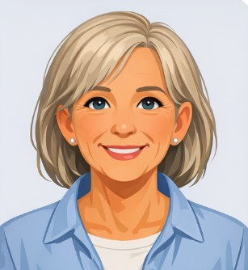
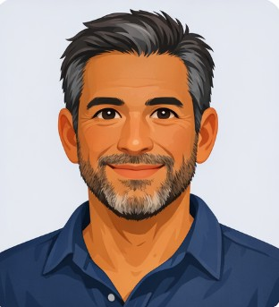

Kicki
Grundare och koordinator. Kicki har arbetat med djurvälfärd i över 10 år och ansvarar för all adoption och transport.

Grundare och koordinator. Kicki har arbetat med djurvälfärd i över 10 år och ansvarar för all adoption och transport.

Marianne hjälper till med att matcha hundar med rätt hem och håller kontakt med nya ägare.

Florian organiserar transporter från Rumänien till Sverige och säkerställer att alla hundar har det tryggt under resan.
Andreea jobbar med hundarna i sheltren i Rumäninen. Hon ser till attt dom har det så bra dom kan ha, får mat och rastas.